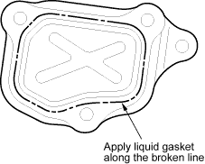
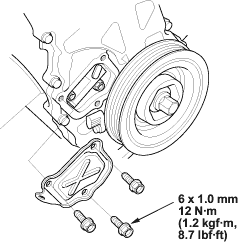
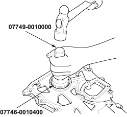
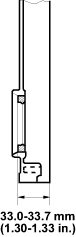

- Remove old liquid gasket from the chain case cover mating surfaces, bolts and bolt holes.
- Clean and dry the chain case cover mating surfaces.
- Apply liquid gasket, P/N 08C70-K0234M, 08C70-K0334M or 08C70-X0331S, evenly to the chain case mating surface of the chain case cover and to the inner threads of the holes.
NOTE: Do not install the parts if 5 minutes or more have elapsed since applying liquid gasket. Instead, reapply liquid gasket after removing old residue.

- Install the chain case cover.


Special Tools Required
- Handle driver, 07749-0010000
- Driver attachment, 52 x 55 mm, 07746-0010400
- Use the special tools to drive a new oil seal squarely into the chain case to the specified installed height.

- Measure the distance between the chain case surface and oil seal.
Oil Seal Installed Height:
33.0 - 33.7 mm (1.30 - 1.33 in.)
